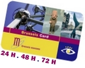

Voucher
Valable pour 1
Nom : Olivier van de Kerchove
Date de naissance: 17/05/1976
e-mail : o.vandekerchove@brusselsinternational.be
Pays : Belgium
Description du produit
D*Tours - Audioguides MP3
Valeur
1 D*Tours - Quartier des Marolles FR 1x5,00€ = 5,00€
Conditions générales de vente
La Brussels Card est accompagnée d'un guide illustré contenant toutes les informations utiles sur les musées participants et sur les réductions auxquelles vous avez droit avec la Brussels Card.
Le voucher pour la Brussels Card peut s'échanger dans l'un de nos bureaux d'accueil de tourisme de la ville:
- Gare du Midi / arrivée trains internationaux, ouvert : En hiver: du lundi au vendredi de 8 à 17h, vendredi de 8 à 20h, samedi de 9 à 18h, dimanche de 9 à 14h En été: de 8 à 20h et vendredi de 8 à 21h
- Grand-Place :ouvert de 9:00 à 18:00 ( fermé les dimanches du 01/01 au 28/02)
Conditions de vente :
Ce voucher est valable uniquement pour la(les) personne(s) nommée(s) ci-dessus. Il n’est pas transférable, n’a pas de valeur financière et ne peut être échangé qu’une seule fois. BI-TC ne remboursera aucune activité ou service non utilisée ou partiellement utilisée.
Ce bon de réservation ne sera valable que si il est signé par la personne reprise en haut de page.

Signature